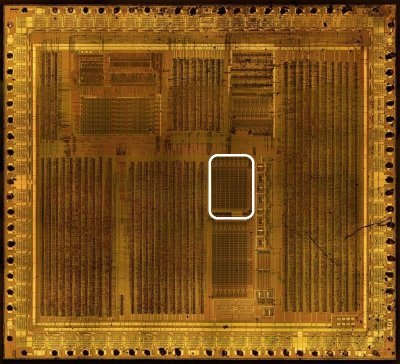
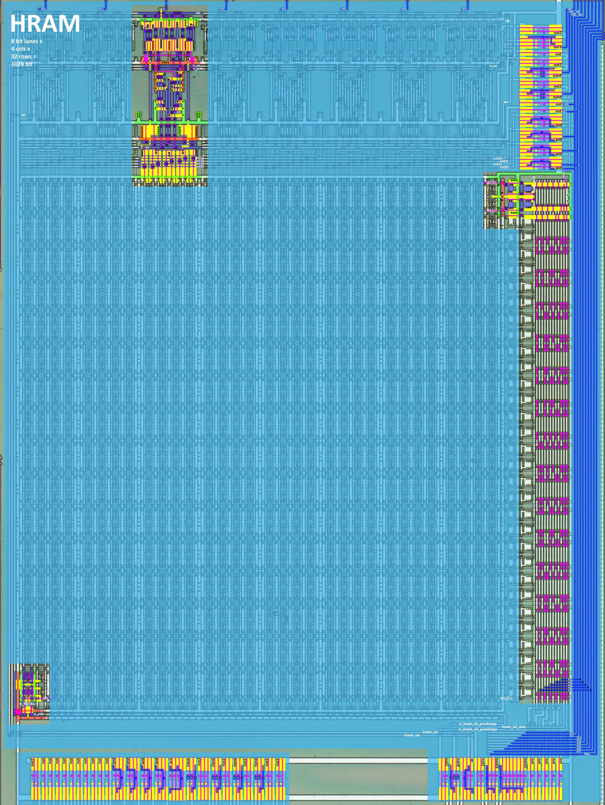
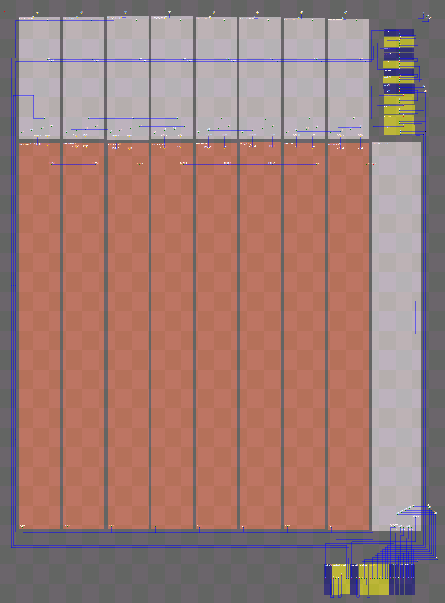
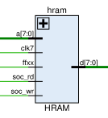
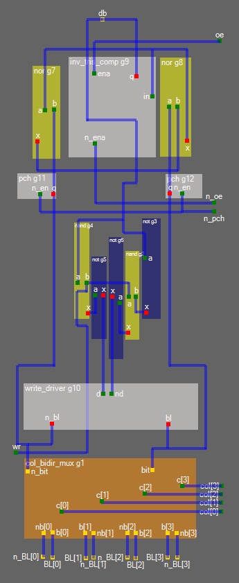

High RAM (HRAM)



Features:
- 8 bit lanes
- 4 columns per bit lane
- 32 rows per column
- 1024 bit total
Signals

| Signal | Dir | From/Where To | Description |
|---|---|---|---|
| clk7 | Input | From ClkGen | Clock 7 (Aka BUKE, LATCH_CLK); write timing clock |
| soc_rd | Input | From MMIO | SoC data bus read (Aka CPU_RD) |
| soc_wr | Input | From MMIO | SoC data bus write (Aka CPU_WR) |
| [7:0] d | Bidir | Global | SoC internal data bus |
| ffxx | Input | From Arb | FFxx register area indicator (HRAM occupies FF80-FFFE) |
| [7:0] a | Input | From Core | SoC internal address bus (lower 8 bits) |
Bit lane

Features:
- The output contains nor latch, the value from which is output to the data bus via a tri-state inverter
- Tri-state inverter has a complementary control signal
oe+/oe - At the very bottom is Column Mux, which also acts as a pass-gate (the bit value is bidirectional)
- Above the Column Mux is a small circuit, @msinger found it's called "Write Driver" (http://ce-publications.et.tudelft.nl/publications/1521_bti_analysis_of_sram_write_driver.pdf)
- The input value is demultiplexed by a small logic from the nand+not bundle and controlled by the
wrsignal - Bit values from Cell Array in complementary logic BL + BL_bar (well this is common practice)
- The circuit contains additional "prechargers" for bit line (besides those in Cell Array), apparently for balancing purposes
- The circuit does not contain a "canonical" Sense Amp, instead the bit line uses precharge
Cells Array
TBD.
Row Decoder
TBD.
External Logic
The auxiliary logic is used to control precharge, obtain address bit complements, etc. It is made on the basis of standard cells, apparently the developers considered it unnecessary to embed it as a custom design.
TBD.